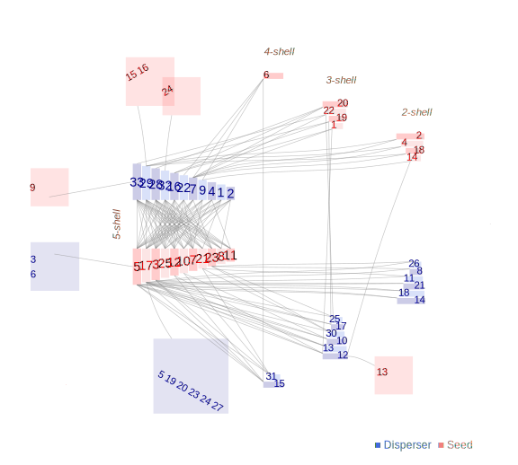

Network: M_SD_020

Disperser 1 Coccothraustes.coccothraustes, 2 Columba.palumbus, 3 Corvus.corax, 4 Corvus.corone, 5 Dendrocopos.major, 6 Emberiza.cia, 7 Erithacus.rubecula, 8 Ficedula.hypoleuca, 9 Fringilla.coelebs, 10 Garrulus.glandarius, 11 Loxia.curvirostra, 12 Parus.ater, 13 Parus.caeruleus, 14 Parus.cristatus, 15 Parus.major, 16 Phoenicurus.ochruros, 17 Phoenicurus.phoenicurus, 18 Pica.pica, 19 Serinus.citinella, 20 Serinus.serinus, 21 Sitta.europaea, 22 Sylvia.atricapilla, 23 Sylvia.borin, 24 Sylvia.cantillans, 25 Sylvia.communis, 26 Sylvia.conspicillata, 27 Sylvia.melanocephala, 28 Turdus.iliacus, 29 Turdus.merula, 30 Turdus.philomelos, 31 Turdus.pilaris, 32 Turdus.torquatus, 33Turdus.viscivorus
Seed
1 Amelanchier ovalis, 2 Arum italicum, 3 Berberis vulgaris, 4 Cotoneaster granatensis, 5 Crataegus monogyna, 6 Daphne laureola, 7 Hedera helix, 8 Juniperus communis, 9 Juniperus oxycedrus, 10 Juniperus phoenicea, 11 Juniperus sabina, 12 Lonicera arborea, 13 Lonicera etrusca, 14 Lonicera splendida, 15 Paeonia officinalis, 16 Polygonatum odoratum, 17 Prunus mahaleb, 18 Prunus prostrata, 19 Rhamnus myrtifolius, 20 Rhamnus saxatilis, 21 Rosa canina, 22 Rubia peregrina, 23 Rubus ulmifolius, 24 Sorbus aria, 25Taxus baccata
P. Jordano, unpubl. Nava Correhuelas. S. Cazorla, SE Spain.